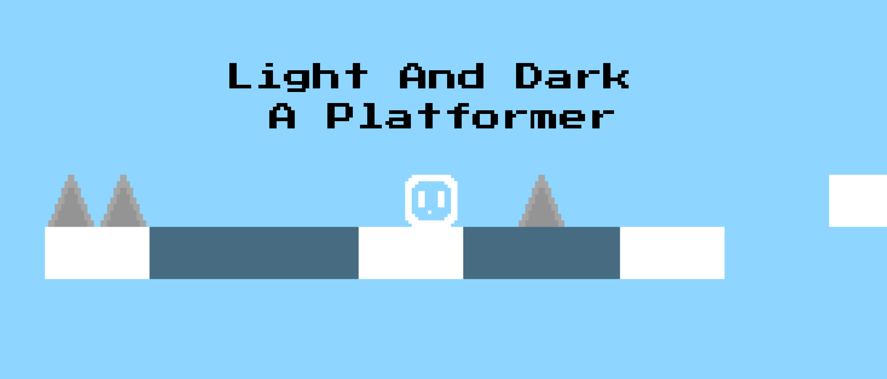

Alekzander Lewis
About Me
I’m a 15 year old software developer with a keen intrest in video game creation. In my spare time I enjoy 3d modeling in blender, making music, bouldering and playing video games.
Skills
- Skilled in various programming languages
- Experienced in 3D modelling using Blender
- Proficient in Adobe Photoshop
- Strong hospitality and customer service skills
- Skilled guitarist and music producer
- Proficient in mathematics
- Strong business and entrepreneurship skills
What I've Done
Developed various websites and games, and organised and hosted two school Game Jams.
Job Experience
little Notes Of Thanks
May 2026 - Present

Game Jams
Organised and hosted two game jams at my school, bringing together students to create their own games within a set timeframe. I helped organise the events, set up the games and supported participants throughout the jams.
Jam 1
Jam 2

Light And Dark A Platformer
Light And Dark A Platformer is a game I made in Godot for my second Aotea College Game Jam.
Check It Out Here